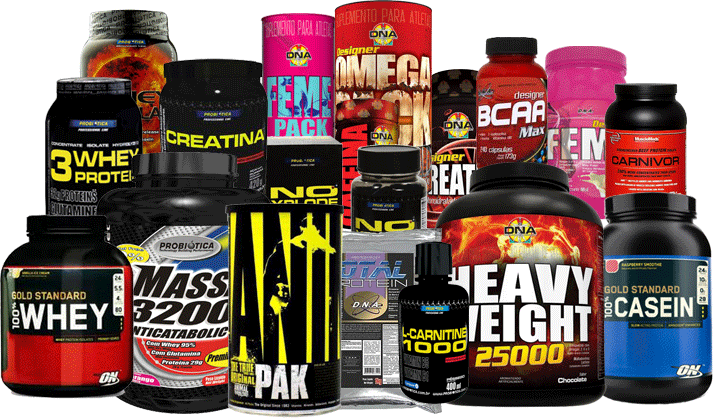

Importância dos Suplementos
Importância de Consumir Suplementos Alimentares
Suplementos alimentares são produtos destinados a complementar a dieta normal tanto em calorias como também em proteínas, carboidratos, gorduras, vitaminas, minerais e fibras, dependendo das necessidades de cada pessoa.
Os suplementos visam atender as
necessidades de atletas de alta performance, praticantes de atividade física e todas as pessoas que queiram complementar a sua dieta para ganho de peso, massa muscular ou para melhora do estado de saúde geral.

É importante lembrar que os suplementos não substituem a dieta normal, eles participam como coadjuvantes para suprir as necessidades nutricionais de atletas e esportistas que na maioria das vezes não conseguem suprir seus requerimentos diários de nutrientes.
OBS: Diabéticos devem consultar médico ou nutricionista antes de consumir esses produtos.